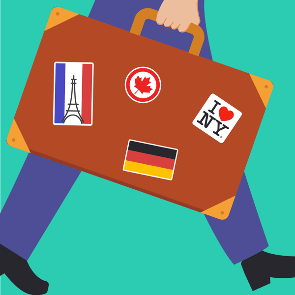
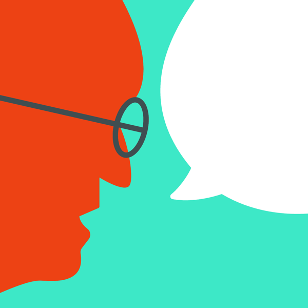

Foolio
Improving social interaction and implementing channels for monetization for a multiplayer game
Foolio is an online multiplayer game, where you earn points by fooling other players. Me and 2 of my friends started Foolio as a personal project. Foolio was an enhanced version of the game Psych-which was marred by bugs and latency issues.
HOW IT WORKS

Choose a set to get started, each set contains different type of questions

Write a fake but convincing answer to the question.

All but one are fake answers.
+1 pt for the right answer,
+2 for fooling each player.

Win max points by fooling other players. Link your fb to compete with friends.
As the game is Q&A based, content was going to be a key aspect. Before curating the content, we had to decide the users we’d create it for. Initially, we developed the content for an Indian audience. However, we had to create several new sets after large number of our users turned out to be from the USA and Europe.
I also had a lot of fun illustrating for the question sets. We wanted to project the game as delightful yet sophisticated. As a result, I created the illustrations using simple shapes and a bold color palette to reflect the same.
ILLUSTRATIONS
 Around the World
Science
 Complete the Quote
Sports
We relied on data and user testing to iterate and improve the app. We monitored our data every few weeks to identify possible pain points and iterated on our designs. However, iteration is usually aimed at incremental improvement and sometimes insufficient to discover unmet user needs. We were lucky to have a large group of freinds who provided feedback and helped us improve the product. During this period, a few key ideas that we developed were:
Chat
While testing the game, we found it to be much more engaging when players sat down together to play, as it gave players a chance to convince and mislead others. To overcome the constraint of proximity and replicate the same experience for remote players, we decided to introduce chat. It greatly impacted the gameplay as players could now communicate in real time.

Chat is omnipresent and can be accessed from all states of the game.

A peeking chat ensured that the users didn’t miss out on any progress in the game.
Public games
Setting facebook login as default helped us easily create a social graph within the game. It also made it easier for users to invite their friends. Moreover, users were notified when their friends were playing. Sadly, a lot of users ckecked the notifications long after the game was over, often landing on deserted games and in some cases uninstalling the app.
To fix this problem, we created public games. Users could now play with random opponents. They could also add these opponents to their friends and thus expand their social graph. It helped increase the engagement.
Monetization
Our initial stream of revenue was via in-app purchases in the form of premium question sets. Unfortunately, the volume of purchases wasn’t very promising. We felt a need to explore other ways of monetization.
1. Ad revenue:
We opened up the premium sets for all our users in a bid to drive ad revenue. Now users could try a few questions before making a purchase which helped us sell more sets. Players were given a choice to watch an ad to play a few rounds or purchase the set for an ad-free experience.
2. Hints:
Just a few months after launch, we collected a huge number of fake answers. Using data, we filtered out the most convincing ones and sold them as hints. Generating hints didn’t require any manual intervention as players themselves created the content.
IN-APP PURCHASES AND AD-REVENUE
Premium sets were initially offered as in-app purchases.

Users were later given an option to watch ads to play premium sets.

We also incorporated a store where users could buy hints and premium sets.

Hints helped users populate answers- increasing their chances of winning.
Present Challenges
Retention is a major challenge as each set contains a limited number of questions. We add new content every few weeks. However, it only takes a month for regular users to exhaust all the questions. Content creation may be scaled via crowdsourcing and incentivized in the form of virtual rewards.
Currently, users do not store any value in the game, as the scoreboard resets for each game. The players can be rated according to their skills using a system similar to the Elo rating. Not only will this improve competition amongst the players, but will also encourage them to play more and improve their rating.
Foolio was the only personal project I worked on in the last few years. It was also the first time I got to design a game application ground up. It helped me understand the dynamics of human psychology in the context of a game. Hopefully, I’ll be able to apply its learnings to my designs in the future.
Despite being a small team of 3 with full day jobs and very limited time, it was heartening to see the product evolve at a good pace. A very special thanks to my friends Saurabh Goyal and Rohit Goyal for being a part of intense debates and handling the code excellently.

Avik Dey
UI/UX designer based in Mumbai. Ex-design lead at TinyOwl and Runnr.